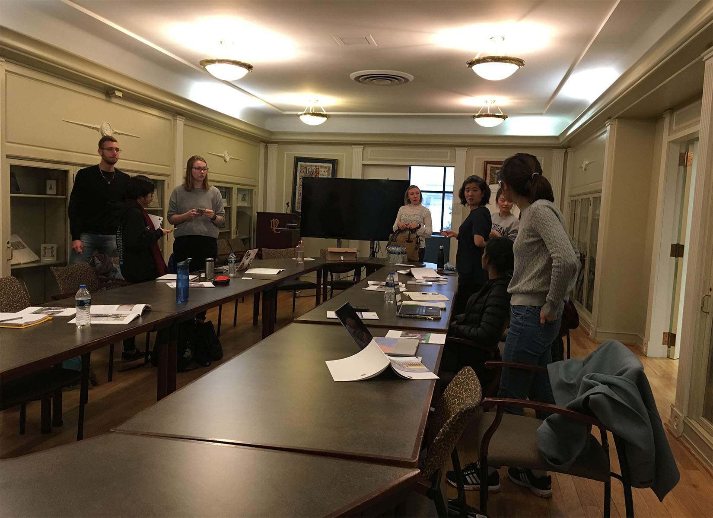
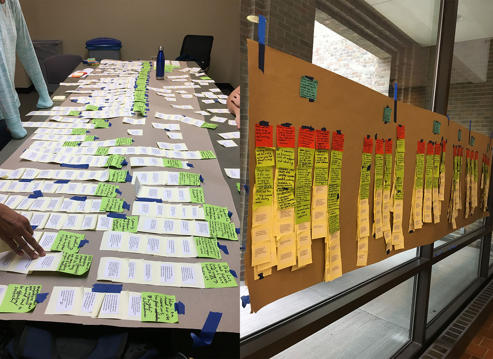
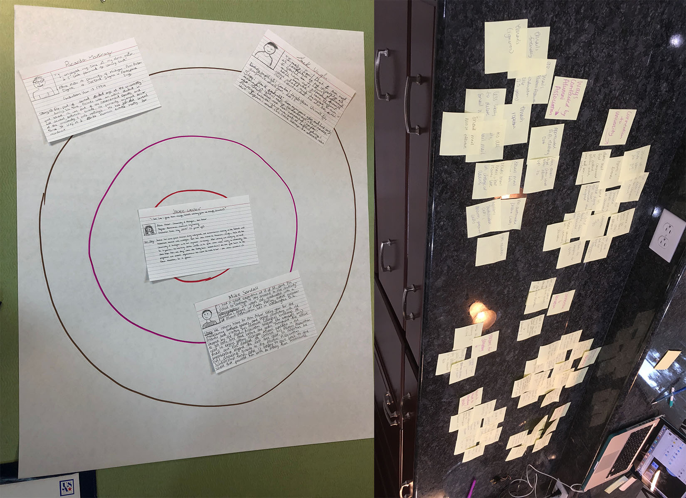

Skip to main content
About
Experience
UX Portfolio
Visual Design Portfolio
Resume
Contact
User Experience Portfolio: My Latest Work
IMPACT in Information

POD Programming

Ferndale Parks and Recreation

Alumni Donations Project
Venture i3
ePortfolio Module Design